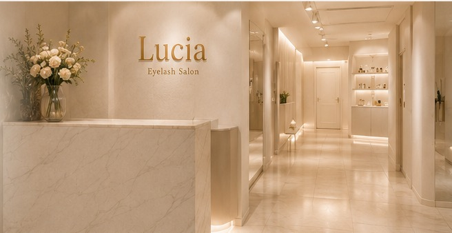
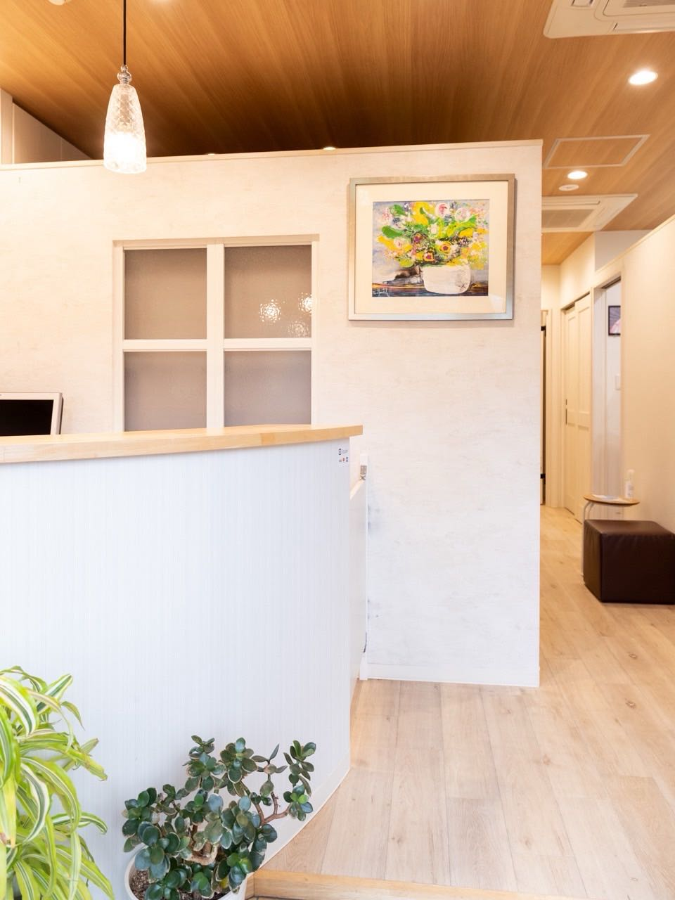
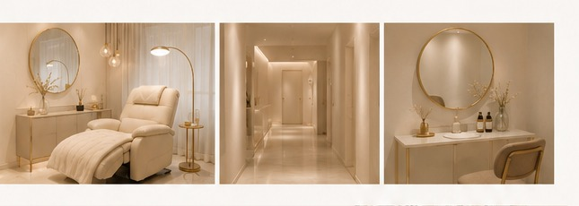
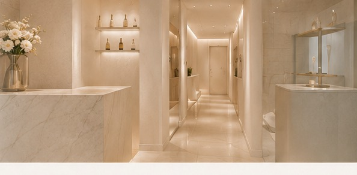

アクセス
滋賀・南草津エリアで、目元のお悩みに丁寧に向き合うプライベートサロンです。皆さまのご来店を心よりお待ちしております。
Eyelash Salon Lucia
| 住所 | 〒525-0058 滋賀県草津市野路町3001 日替わりサロンtally内 |
|---|---|
| アクセス | JR南草津駅より徒歩10分 駐車場2台完備 |
| 営業時間 | 9:00〜18:30（不定休） |
| 定休日 | 不定休 |
| ご予約 | LINE・Instagram DM にてお気軽にご連絡ください |
来店までの道順
JR南草津駅より徒歩10分
01
JR南草津駅 東口
東口を出て、ロータリーを右手に進み、野路方面へ向かいます。
02
野路町方面へ
南草津駅から南東へ直進し、野路町3001番地を目指します（徒歩約10分）。
03
日替わりサロンtally内へ
めるべーゆ杉 内「日替わりサロンtally」の Lucia にお越しください。駐車場は2台ご用意しています。


